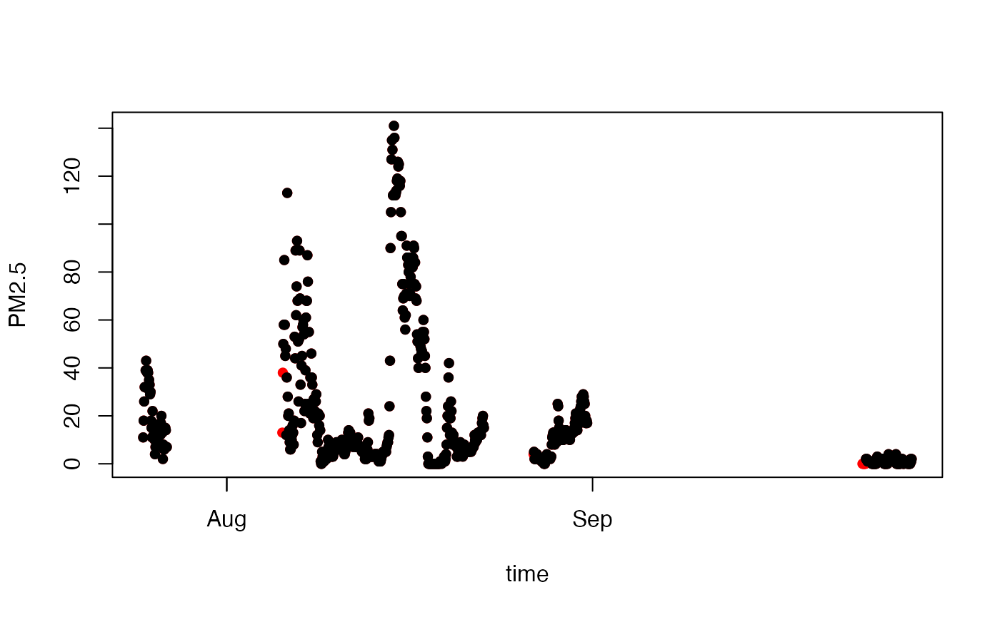

vignettes/articles/Working_with_WRCC_data.Rmd
Working_with_WRCC_data.RmdThis article describes how to download and work with raw data from WRCC. Begin by loading the MazamaCoreUtils and AirMonitorIngest libraries:
library(MazamaCoreUtils)
library(AirMonitorIngest)
# Generate logging statements using MazamaCoreUtils logging functionality
logger.setLevel(TRACE)The wrcc_downloadData() function sends a request to
WRCC, asking for raw, ASCII data for a single monitor over some time
period.
fileString <- wrcc_downloadData(20210701, 20210930, unitID = 'sm16')## DEBUG [2022-06-24 15:16:13] ----- wrcc_downloadData() -----
## TRACE [2022-06-24 15:16:13] Downloading WRCC data for unitID sm16 ...This fileString is just the tab-delimited data file and
will look something like this:
Smoke #16 : GMT Deg Deg ser # ug/m3 Unk l/m Deg C % Unk deg C % m/s Deg volts : Date/Time GPS GPS Type Serial Conc Misc Ave. Av Air Rel Misc Sensor Sensor Wind Wind Battery Alarm :YYMMDDhhmm Lat. Lon. Number Hly Av #1 Air Flw Temp Humidty #2 Int AT Int RH Speed Direc Voltage 2107242200 39.714348 -105.123962 9 871600 11 -9999 2 31.4 32 83177 -9999 29 1 180 14 0 2107242300 39.714348 -105.123962 9 871600 18 -9999 2 32.5 30 83158 -9999 26 0.9 180 14 0 2107250000 39.71447 -105.124001 9 871600 26 -9999 2 31 32 83138 -9999 26 1.4 180 14 0 ...
The wrcc_parseData() function identifies the specific
data format received and properly parses the fileString
into a tibble that is ready for examination.
tbl <- wrcc_parseData(fileString)
dplyr::glimpse(tbl)## DEBUG [2022-06-24 15:16:18] ----- wrcc_parseData() -----
## DEBUG [2022-06-24 15:16:18] ----- wrcc_parseData() -----
## Rows: 668
## Columns: 19
## $ DateTime <chr> "2107242200", "2107242300", "2107250000", "2107250100",…
## $ GPSLat <dbl> 39.71435, 39.71435, 39.71447, 39.71447, 39.71447, 39.71…
## $ GPSLon <dbl> -105.124, -105.124, -105.124, -105.124, -105.124, -105.…
## $ Type <dbl> 9, 9, 9, 9, 9, 9, 9, 9, 9, 9, 9, 9, 9, 9, 9, 9, 9, 9, 9…
## $ SerialNumber <chr> "871600", "871600", "871600", "871600", "871600", "8716…
## $ ConcRT <dbl> 11, 18, 26, 32, 32, 39, 43, 39, 38, 39, 38, 31, 35, 33,…
## $ Misc1 <dbl> -9999, -9999, -9999, -9999, -9999, -9999, -9999, -9999,…
## $ AvAirFlw <dbl> 2, 2, 2, 2, 2, 2, 2, 2, 2, 2, 2, 2, 2, 2, 2, 2, 2, 2, 2…
## $ AvAirTemp <dbl> 31.4, 32.5, 31.0, 29.8, 28.8, 26.8, 25.8, 24.9, 23.5, 2…
## $ RelHumidity <dbl> 32, 30, 32, 30, 28, 33, 33, 39, 45, 35, 44, 40, 44, 45,…
## $ Misc2 <dbl> 83177, 83158, 83138, 83118, 83118, 83138, 83177, 83158,…
## $ SensorIntAT <dbl> -9999, -9999, -9999, -9999, -9999, -9999, -9999, -9999,…
## $ SensorIntRH <dbl> 29, 26, 26, 26, 25, 29, 31, 34, 40, 34, 39, 38, 41, 41,…
## $ WindSpeed <dbl> 1.0, 0.9, 1.4, 0.9, 0.3, 0.4, 1.5, 0.4, 0.4, 1.0, 0.3, …
## $ WindDir <dbl> 180, 180, 180, 180, 180, 180, 180, 180, 180, 180, 180, …
## $ BatteryVoltage <dbl> 14.0, 14.0, 14.0, 14.0, 14.0, 14.1, 14.1, 14.1, 14.1, 1…
## $ Alarm <dbl> 0, 0, 0, 0, 0, 0, 0, 0, 0, 0, 0, 0, 0, 0, 0, 0, 0, 0, 0…
## $ monitorName <chr> "Smoke #16", "Smoke #16", "Smoke #16", "Smoke #16", "Sm…
## $ monitorType <chr> "ESAM", "ESAM", "ESAM", "ESAM", "ESAM", "ESAM", "ESAM",…At this point, you can create a time axis and plot the PM2.5 values.
(Note that the DateTime uses 2-digit years so we need to prepend
"20" before parsing.)
time <-
paste0("20", tbl$DateTime) %>%
MazamaCoreUtils::parseDatetime(timezone = "UTC")
plot(time, tbl$ConcRT, ylab = "PM2.5")QC algorithms are used to determine whether the reported PM2.5 values
can be trusted. The wrcc_EBAMQualityControl() and
wrcc_ESAMQualityControl() functions remove records whenever
any parameters, e.g. flow rate, are out of their valid
range.
When passed a tibble of raw data from WRCC, the
wrcc_qualityControl() function will choose the proper QC
algorithm and validate values using manufacturer recommended thresholds.
If logging is enabled, output will be printed describing the QC
process.
tbl_qc <- wrcc_qualityControl(tbl)## DEBUG [2022-06-24 15:16:18] ----- wrcc_qualityControl() -----
## TRACE [2022-06-24 15:16:18] Applying ESAM QC rules ...
## DEBUG [2022-06-24 15:16:18] ----- wrcc_ESAMQualityControl() -----
## TRACE [2022-06-24 15:16:18] Flow has 14 missing or out of range values
## TRACE [2022-06-24 15:16:18] Bad Flow values: 0, 0.5, 0.6, 1.7, 1.8, 1.9
## TRACE [2022-06-24 15:16:18] AT has 0 missing or out of range values
## TRACE [2022-06-24 15:16:18] RHi has 0 missing or out of range values
## TRACE [2022-06-24 15:16:18] Conc has 0 missing or out of range values
## TRACE [2022-06-24 15:16:18] datetime has 0 missing or out of range values
## TRACE [2022-06-24 15:16:18] Discarding 14 rows because of QC logic
## TRACE [2022-06-24 15:16:18] Retaining 654 rows of validated measurementsNote that the number of rows is now reduced compared to the raw data.
## [1] 668 19
## [1] 654 20We can see which records were removed by plotting the raw data in red and then overplotting the QC’ed data values in black.
plot(time, tbl$ConcRT, pch = 16, col = "red", ylab = "PM2.5")
# Need a new time axis for tbl_qc
time_qc <-
paste0("20", tbl_qc$DateTime) %>%
MazamaCoreUtils::parseDatetime(timezone = "UTC")
points(time_qc, tbl_qc$ConcRT, pch = 16, col = "black")
Hopefully, this is enough to get you started working with WRCC raw data.